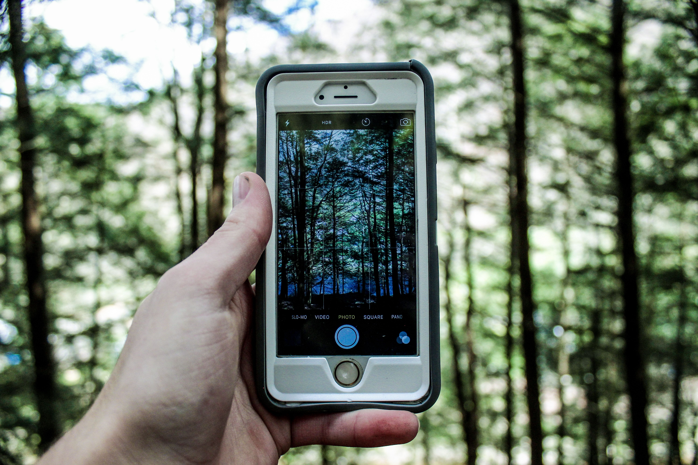
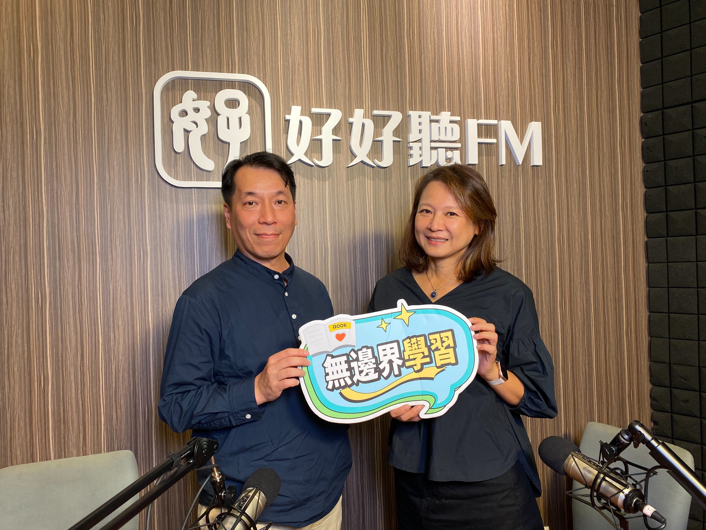

在瞬息萬變的數位時代，從政府內閣到校園企業，無一不高舉「AI浪潮」的大旗，深怕在科技競賽中落後。然而，當我們急著把最新、最炫目的科技工具塞進學習場域時，教育的本質是否正在悄悄失衡？
清大師資培育中心助理教授王智弘帶領我們跳出盲目的科技崇拜，重新審視身為「人」的核心價值，以及數位教養背後那道不可忽視的紅色警戒。
科技樹長得越高，底層的根就要紮得越深
身為理工科背景的學者，王智弘對台灣的科技成就與AI發展充滿期待，但他同時也看見了光芒背後的陰影——「失衡」。
「所有的工具都帶著功能與目的，但工具不能變成目的。」王智弘強調，當社會不斷推動AI教育、教導孩子如何『善用』科技時，我們往往忽略了『善』的真諦。孩子是否具備足夠的判斷力、道德力與思辨能力來駕馭工具？如果不加以平衡，AI教育很容易淪為表面的泡沫，甚至反過來被工具載置，替代了人類的思考能力，最終遭到反噬。
他用了一幅生動的比喻：「科技的樹長得越高，底下看不見的根就要紮得越深。」這個根，涵蓋了人的本質、能力的培養、道德的智慧，以及最根本的身心健康。

推動SEL社會情緒學習，正反映出當代社會的缺口
近年來，教育部大力推動「SEL（社會情緒學習，Social Emotional Learning）」，背後其實有著深刻的時代警訊。王智弘一針見血地指出：「當你在推廣什麼，往往就代表你缺什麼。」
現代青少年面臨高度功利的社會氛圍，自傷、霸凌、情緒感知能力低落等問題頻傳。孩子從小過早接觸手機，一頭栽進虛擬世界，失去了與真實他人互動的機會，社會性自然跟著退化。
「你不能一邊推動SEL，一邊又無限制地推廣數位教育，這兩者是互相抵銷的。」王智弘認為，真正的數位教育配套，不僅是教孩子寫App或應用AI，更包含了在適當的年齡之前，勇敢堅持不做數位教育。
中年級之前，請把手機還給真實的童年
談到幼兒與小學階段的數位教養，王智弘語重心長地呼籲全國家長：「中年級之前，最好不要碰手機。」
他觀察到許多家長用手機當作育兒神器，甚至在餐廳看到幼兒園孩子緊盯螢幕上的短影片。「人的心靈系統跟生理健康系統一樣，需要緊密的累積與生長。小小孩看那些誇大、不真實的聲光刺激，心靈其實已經受傷了，只是這道傷痕看不見。」
王智弘比喻，我們絕不會讓孩子去吃有毒的東西、抽菸喝酒，同樣地，保護孩子內心的健康也需要家長的意識與堅持。「機會成本是殘酷的。當你把時間花在數位學習、滑手機上，孩子就失去了鍛鍊體魄、在大自然裡奔跑、與同伴互動、甚至享受『空白』的機會。而空白，正是創意的來源。」

教育是系統性工程：從家庭出發的覺醒
面對孩子哭鬧要手機的困境，王智弘提醒家長，這往往已經是「末端」的結果。如果在一開始就建立健康的家庭生活習慣，便能減少許多後續的衝突。
更重要的是，身為父母自己也要以身作則。「如果你自己也把生命的中心放在手機上，你也沒有立場去要求小孩。」王智弘坦言，學校老師面對繁重的KPI與多元家庭背景的孩子已經分身乏術，學校不是萬能的，它只是社會的縮影。
唯有從家庭、學校到整個社會共同努力，有意識地為孩子擋掉不必要的數位干擾，提供一個健康、真實的成長環境，我們才能在AI狂飆的時代中，穩穩守護下一代身為「人」的溫度與未來。
更多文章： 1221.org.tw/ https://evaa83.github.io/introduce-self/